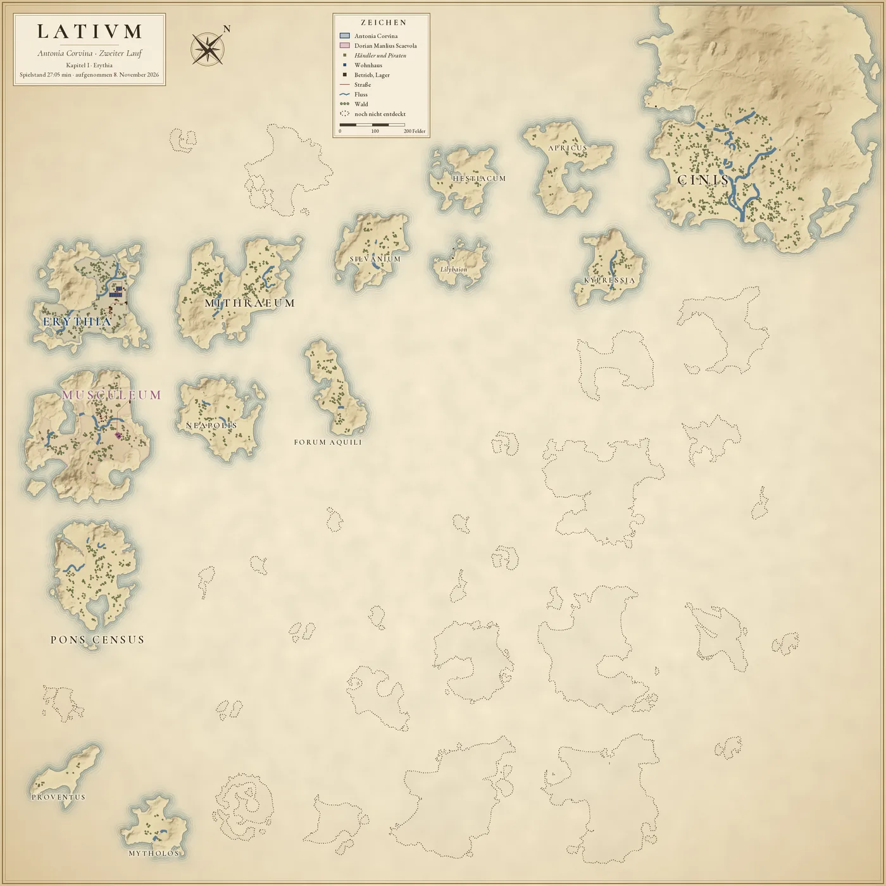
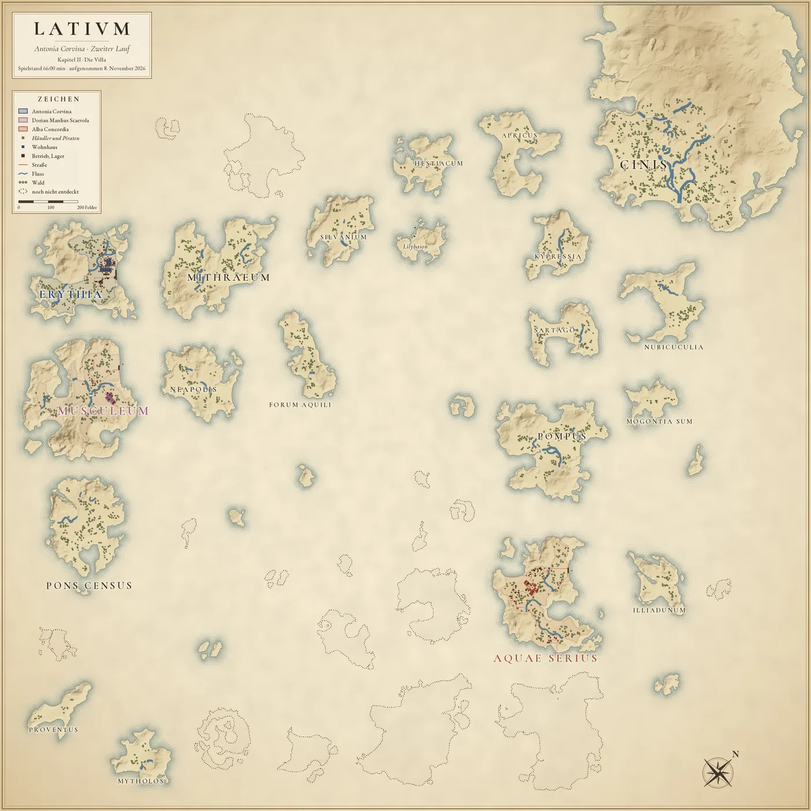
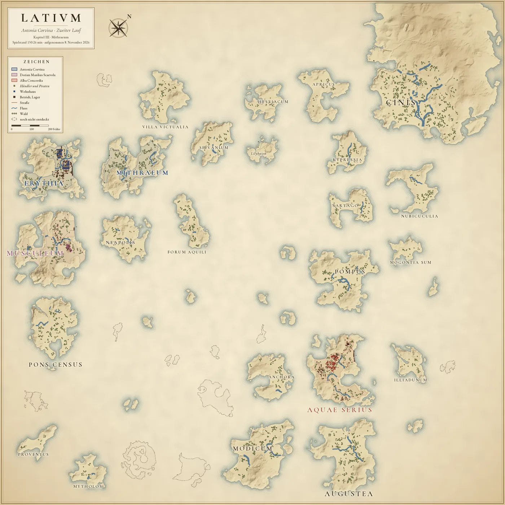
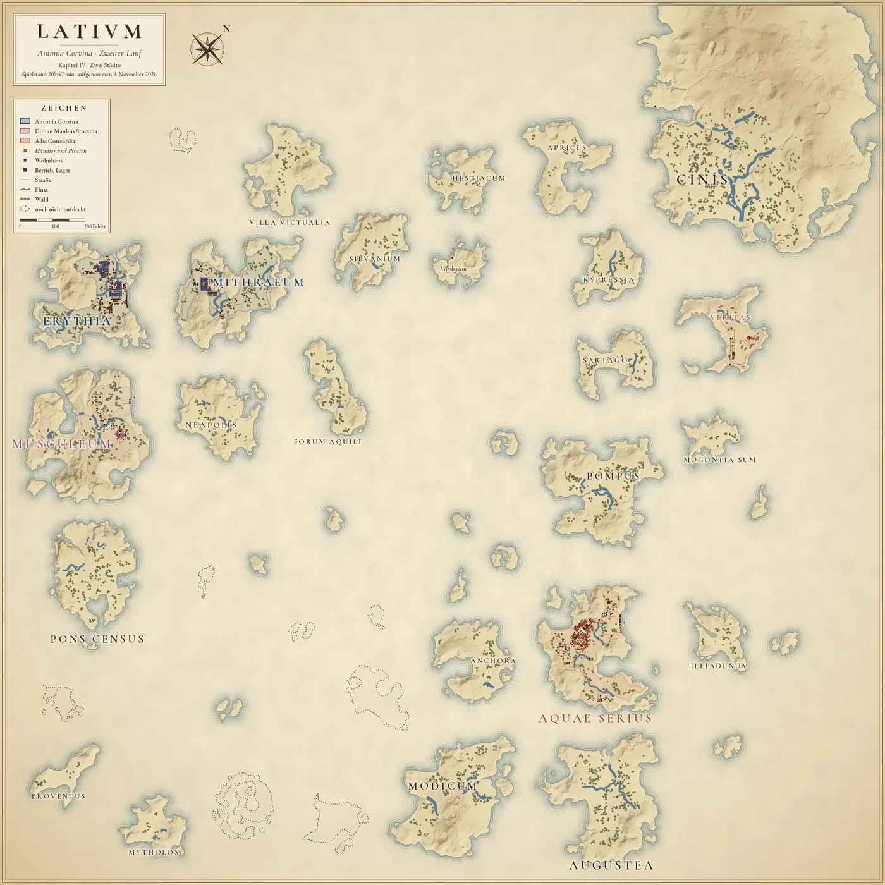
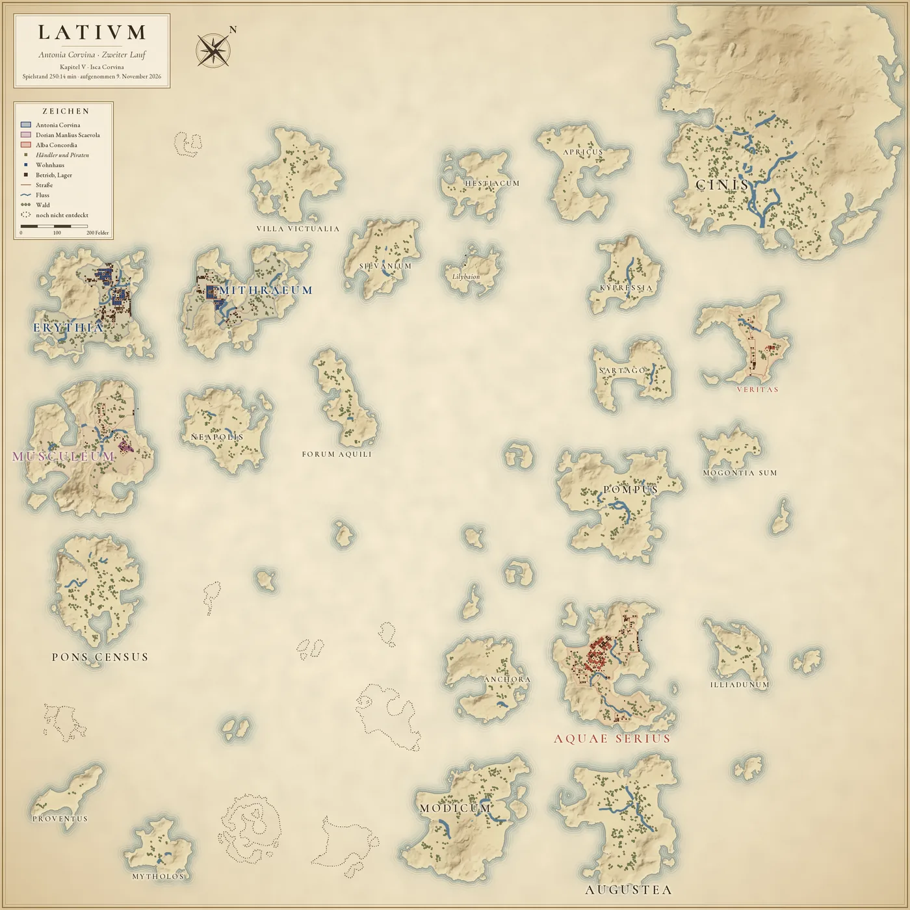
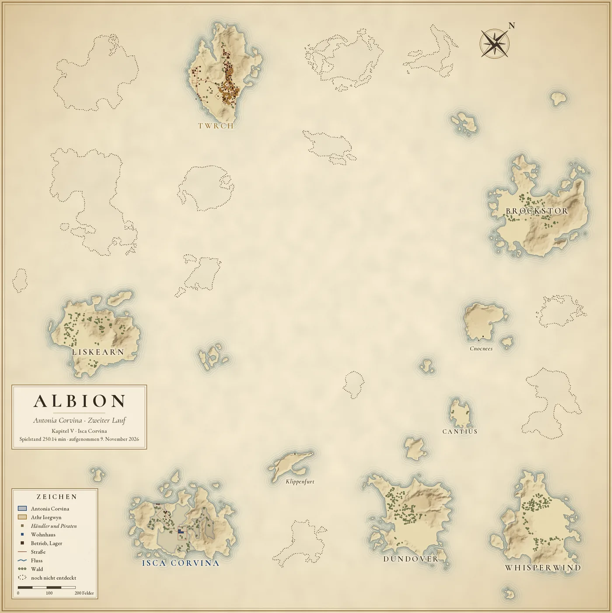
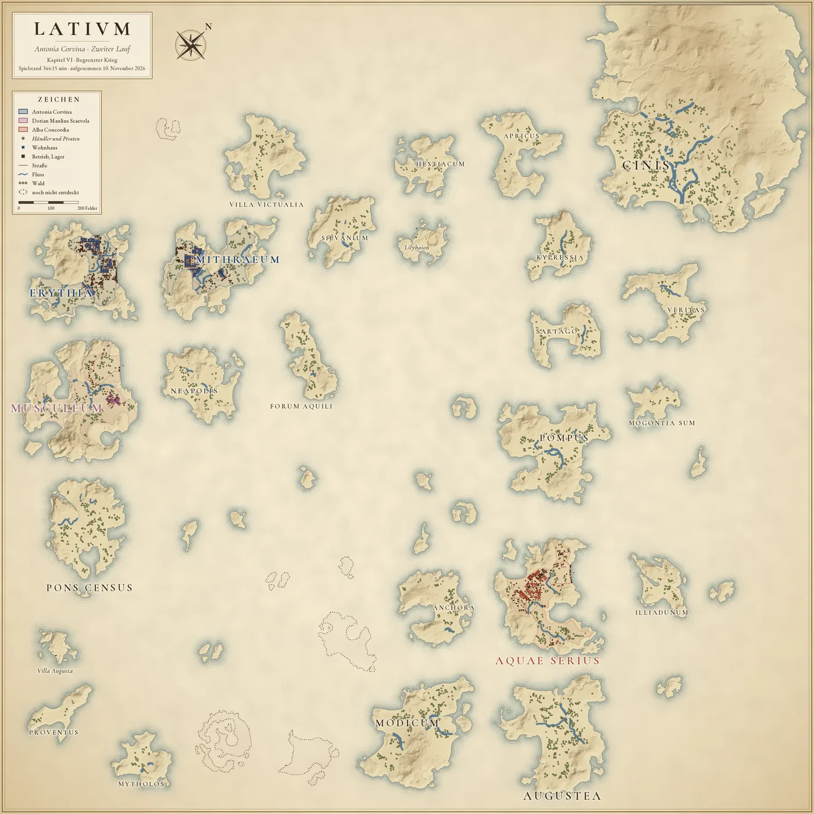
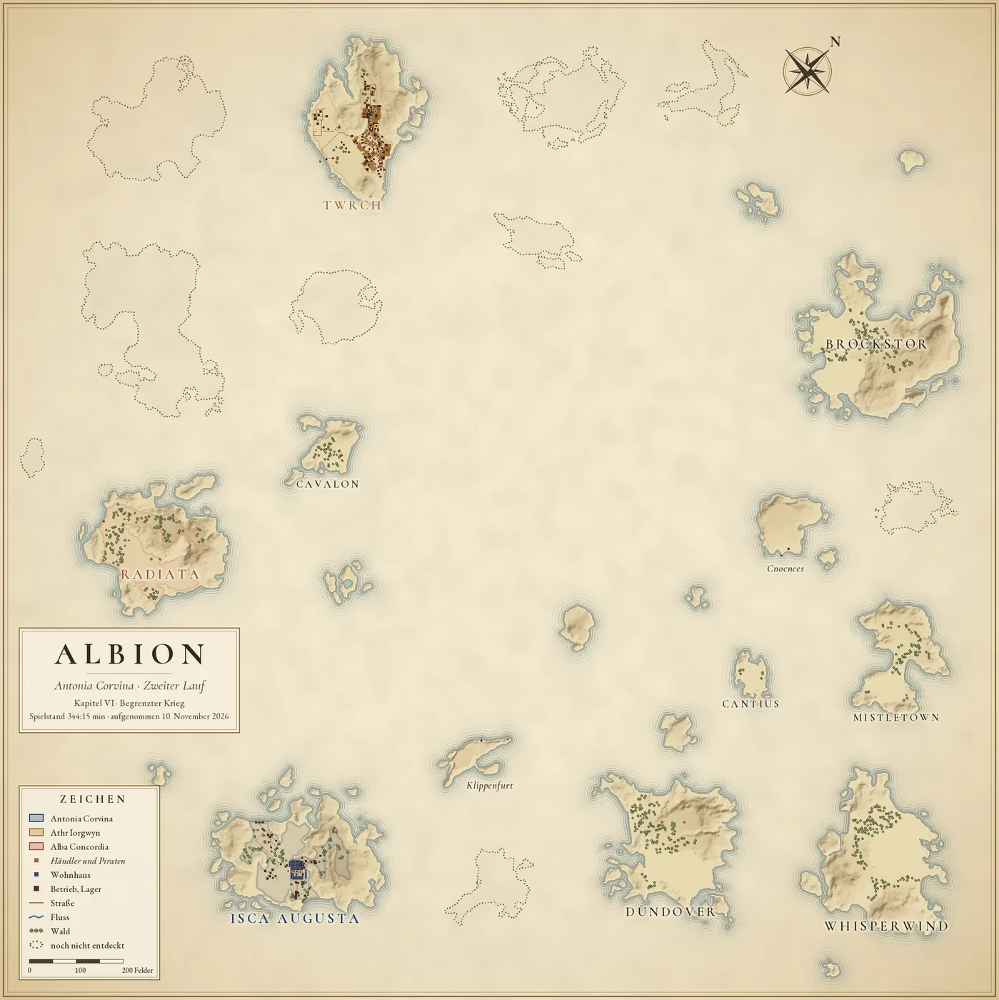

Anno 117 · Pax Romana · Zweiter Lauf
Die Karte
Die Provinz zum Ende jedes Kapitels
Jede Karte zeigt die Provinz so, wie sie im letzten Spielstand vor dem Ende eines Kapitels aussieht. Mit den Ziffern wählst du das Kapitel; ein Klick auf die Karte öffnet sie in voller Größe.

Kapitel I Erythia
0:00 bis 28:19 min Spielzeit · gezeichnet nach dem Spielstand bei 27:05 min, aufgenommen am 8. November 2026
Karte von Latium zum Ende von Kapitel I: Antonias Insel Erythia. Praetoren: Musculeum (Dorian Manlius Scaevola). Entdeckt sind 14 von 28 Inseln.


Kapitel II Die Villa
28:19 bis 66:00 min Spielzeit · gezeichnet nach dem Spielstand bei 66:00 min, aufgenommen am 8. November 2026
Karte von Latium zum Ende von Kapitel II: Antonias Insel Erythia. Praetoren: Aquae Serius (Alba Concordia); Musculeum (Dorian Manlius Scaevola). Entdeckt sind 20 von 28 Inseln.


Kapitel III Mithraeum
66:00 bis 150:33 min Spielzeit · gezeichnet nach dem Spielstand bei 150:26 min, aufgenommen am 8. November 2026
Karte von Latium zum Ende von Kapitel III: Antonias Inseln Erythia und Mithraeum. Praetoren: Aquae Serius (Alba Concordia); Musculeum (Dorian Manlius Scaevola). Entdeckt sind 24 von 28 Inseln.


Kapitel IV Zwei Städte
150:33 bis 209:48 min Spielzeit · gezeichnet nach dem Spielstand bei 209:47 min, aufgenommen am 9. November 2026
Karte von Latium zum Ende von Kapitel IV: Antonias Inseln Erythia und Mithraeum. Praetoren: Aquae Serius und Veritas (Alba Concordia); Musculeum (Dorian Manlius Scaevola). Entdeckt sind 24 von 28 Inseln.



Kapitel V Isca Corvina
209:48 bis 250:14 min Spielzeit · gezeichnet nach dem Spielstand bei 250:14 min, aufgenommen am 9. November 2026
Karte von Latium zum Ende von Kapitel V: Antonias Inseln Erythia und Mithraeum. Praetoren: Aquae Serius und Veritas (Alba Concordia); Musculeum (Dorian Manlius Scaevola). Entdeckt sind 24 von 28 Inseln.
Karte von Albion zum Ende von Kapitel V: Antonias Insel Isca Corvina. Praetoren: Twrch (Athr Iorgwyn). Entdeckt sind 9 von 19 Inseln.
Latium in voller Größe · Albion in voller Größe · Kapitel V in der Chronik




Kapitel VI Begrenzter Krieg
250:14 bis 344:15 min Spielzeit · gezeichnet nach dem Spielstand bei 344:15 min, aufgenommen am 10. November 2026
Karte von Latium zum Ende von Kapitel VI: Antonias Inseln Erythia und Mithraeum. Praetoren: Aquae Serius (Alba Concordia); Musculeum (Dorian Manlius Scaevola). Entdeckt sind 25 von 28 Inseln.
Karte von Albion zum Ende von Kapitel VI: Antonias Insel Isca Augusta. Praetoren: Radiata (Alba Concordia); Twrch (Athr Iorgwyn). Entdeckt sind 11 von 19 Inseln.
Latium in voller Größe · Albion in voller Größe · Kapitel VI in der Chronik


Zeichen der Karte
- Antonia Corvina
- Dorian Manlius Scaevola
- Alba Concordia
- Athr Iorgwyn
- Händler und Piraten, Namen kursiv
- Wohnhaus, in der Farbe des Besitzers
- Betrieb oder Lager
- Straße
- Fluss
- Wald
- Insel, die noch nicht entdeckt ist
Wie die Karte entsteht
- Aus dem Spielstand: Lage und Drehung jeder Insel, Wohnhäuser, Betriebe und Lager, Straßen, wem eine Insel gehört und welche Inseln schon entdeckt sind.
- Aus den Inseldaten des Spiels: Küsten, Höhen, Flüsse und Wald. Der Wald folgt der Vorlage der Insel; wo gebaut ist, fehlt er.
- Namen wie im Spiel. Inseln, die der Spieler umbenannt hat, tragen den neuen Namen ab der Umbenennung.
Gezeichnet für die Chronik vom Anno-Monitor auf dem Rechner des Spielers: Pergament, Wasserlinien, Schummerung, Farben und Schrift. Bilder aus dem Spiel sind nicht verwendet. Jede Karte nennt die Spielzeit ihres Spielstands und den Tag der Aufnahme.